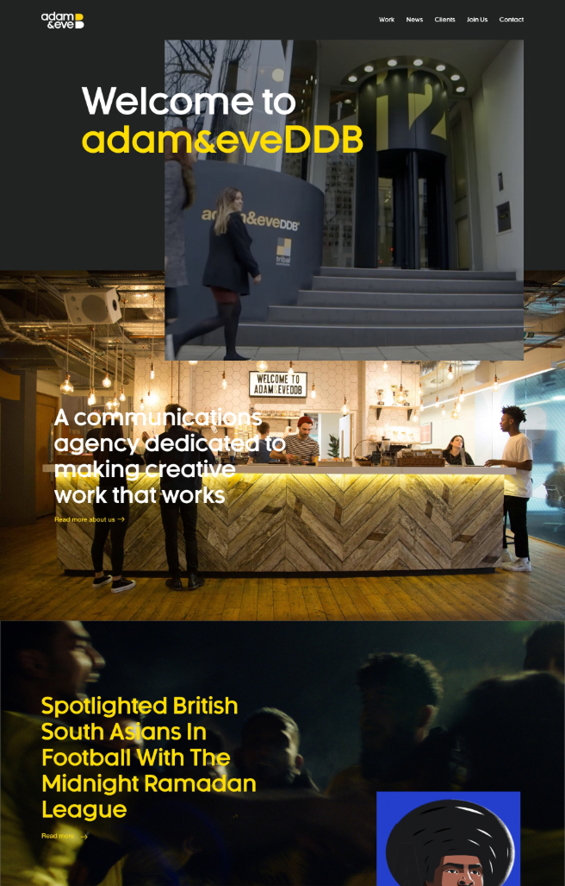
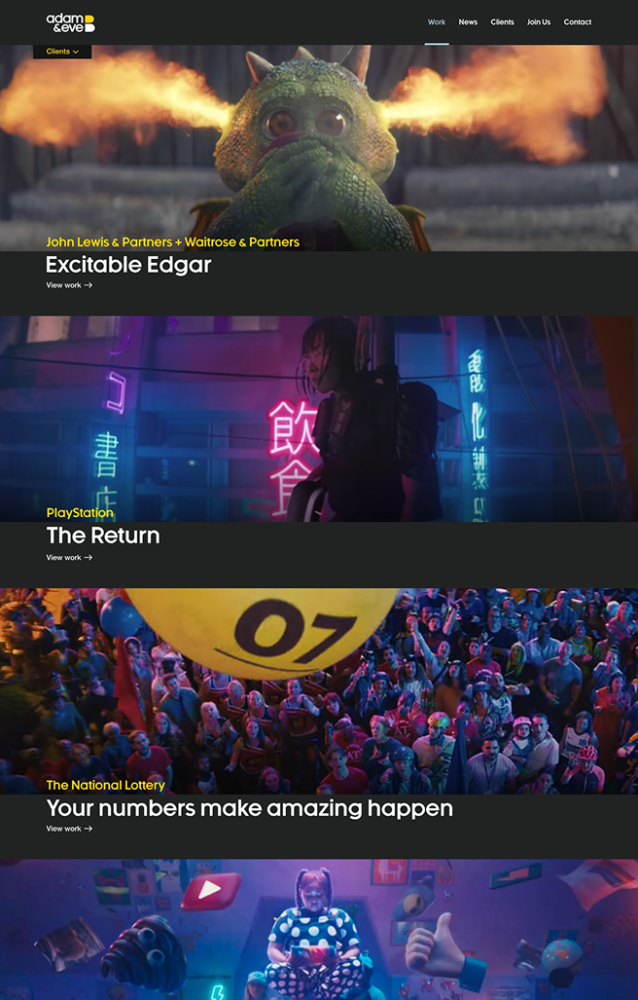
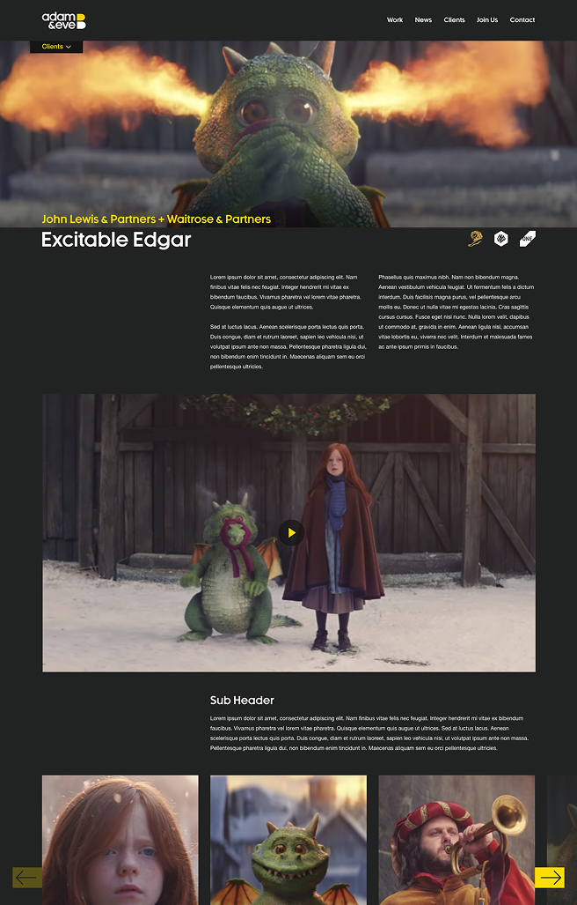
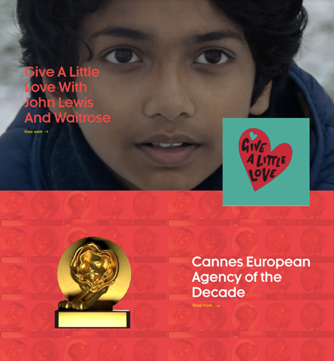
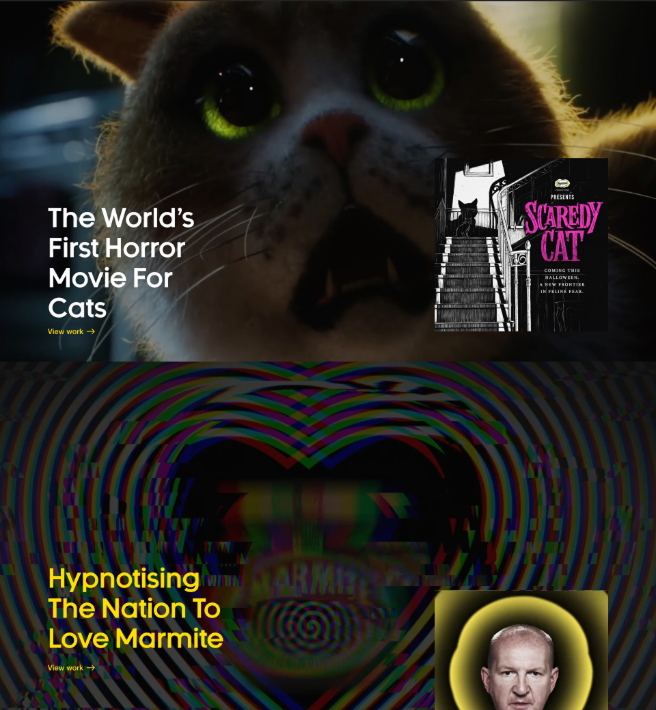
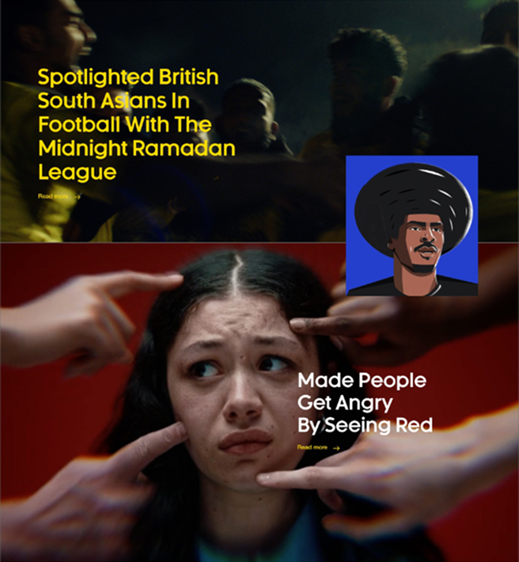

Acting as the Lead Digital Producer, I oversaw the redesign and rebrand of four agency websites across London, NYC, West, and Berlin, bringing them in line with a new global identity for adam&eveDDB.
The project started with a thorough audit of the existing data structure to ensure continuity and scalability before a line of code was touched. From there I worked closely with UX designers and developers to recommend the right CMS solution and oversee the re-skinning across all four regions, keeping the experience cohesive whether you landed in London or Berlin.



Once live, I handed each site over to the respective new business teams and made sure they felt confident running things day to day. The main London site lives at adamandeveddb.com.



Agency: adam&eveDDB
Art Director: Chris Chapman
Digital Producer: Richard Bailey
Digital Designer: Mauricio Brandt
Full-Stack Developer: Ben Aldrich & Max McCloud
Account Team: Miranda Hipwell